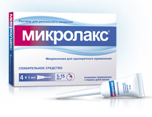

Ректоскопия – осмотр прямой кишки ректоскопом
- Сначала пациент снимает всю одежду с нижней части тела. Потом он или ложится на смотровой стол, согнув нижние конечности в тазобедренных и коленных суставах, или принимает коленно-локтевую позицию (опирается на локти и колени, прогибая при этом спину).
- Последняя позиция используется при выполнении исследования при помощи жесткого тубуса, так как она облегчает его проведение в сигмовидную кишку из прямой. Если врач применяет гибкий ректоскоп, больной может лежать на боку.
- Перед аноскопией (ректоскопией) обязательно проводится исследование прямой кишки при помощи пальцев.
- Для проведения исследования в прямую кишку нагнетается некоторое количество воздуха (это необходимо для ее расправления).
- Затем врач смазывает наконечник ректоскопа вазелином или гелем и вводит в анус пациента примерно на 4-5 см (обтуратор после этого удаляется).
- Продолжая подавать воздух, он вводит прибор в просвет кишечника, вращая при этом тубус по часовой стрелке. Вся процедура проходит под контролем зрения специалиста.
Сейчас появились видеоректоскопы, дающие возможность вывести полученные данные на экран, что позволяет нескольким врачам оценить состояние больного.
Выполняя ректороманоскопию кишечника, доктор оценивает состояние слизистой оболочки (ее влажность, эластичность, блеск, цвет и рельеф), обращает внимание на наличие каких-либо патологий, особенности сосудистого рисунка, а также на двигательную функцию и тонус данных отделов кишечника.
Осложнения
В целом ректоскопия является безопасной процедурой, и осложнений при ней практически не бывает. Если же произошла перфорация прямой кишки, больному требуется немедленная операция.
Подготовка к ректоскопии
Подготовка к обследованию прямой кишки заключается в следующем:
- Соблюдение диеты.За день до ректоскопии пациент должен подготовиться и не употреблять в пищу свежие овощи, фрукты, бобовые и хлеб грубого помола. Есть надо рисовую или манную каши, сыр, мясо нежирных сортов, рыбу и мясной бульон. Продукты необходимо хорошо протушить или сварить. Ужинать перед обследованием не надо, но можно выпить чашечку чая. В день проведения ректоскопии можно съесть легкий завтрак (например, чай и нежирный творог).
- Очищение кишечника. Его можно проводить двумя способами:
- При помощи клизмы. Вечером перед ректоскопией делается две очистительные клизмы (1-1,5 литра обычной воды комнатной температуры) с интервалом примерно в 20 минут. Для этого следует воспользоваться кружкой Эсмарха (продается в аптеке). Рано утром процедуру требуется повторить.
- При помощи слабительного. Многие специалисты рекомендуют воспользоваться таким препаратом, как «Фортранс». Его следует пить за сутки до приема врача. Два пакетика средства разводят в 2-х литрах питьевой воды без газа и пьют по стакану (250 мл) через каждые 15 минут. Результат появляется через час. Можно воспользоваться такими средствами, как «Флит», «Дюфалак», «Микролакс». За 30 минут до обследования делают 2-3 клизмы для полного очищения дистального отдела кишечника.